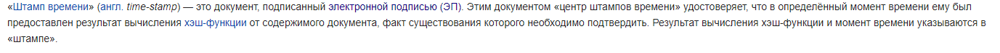
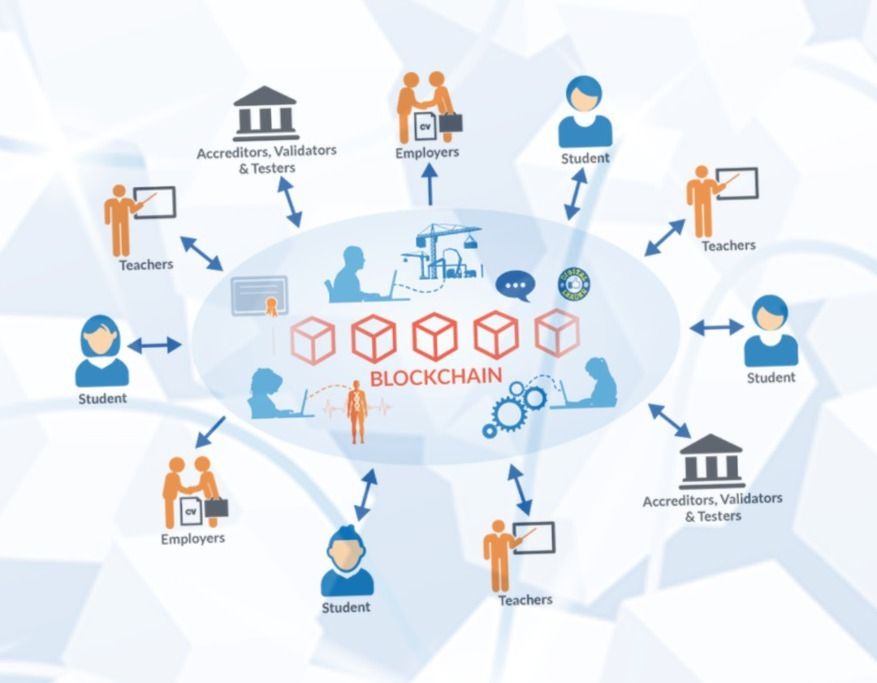
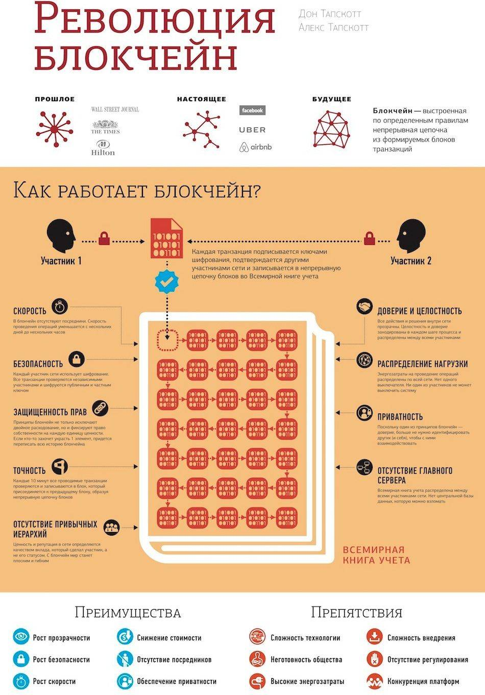

ИСТОРИЯ БЛОКЧЕЙНА: ТЕХНИЧЕСКАЯ СТОРОНА ВОПРОСА
Около 30 лет назад разработчики поняли, что с данными проще работать, если они собраны в блоки. Тогда же появилась технология облегчающая работу с блоками – связанные штампы времени.

Вот здесь пригодились хеш функции. Они то как раз и были тем элементом, который связывает теперь транзакции в удобные блоки.
Но этого было недостаточно. Удобно – не значит безопасно. Чтобы узлы “не падали” под влиянием различных факторов, успешно применялись распределенные вычисления.
История блокчейна примечательна тем, что, чем дальше в прогресс технологий погружались разработчики, тем очевиднее становился факт – система блокчейн гораздо больше и функциональнее, чем представлялось изначально. И сферы применения этой технологии очень разнообразны.

Сфера образования, найм сотрудников, строительство, медицина, сфера услуг, банковская среда и др. Технология универсальна. Но первый блокчейн был создан под цифровую валюту – биткоин. Некоторые пользователи до сих пор не понимают разницы между биткоином и блокчейном. Но это принципиально разные технологии.
ИСТОРИЯ БЛОКЧЕЙНА: КТО ЗАЛОЖИЛ “ПЕРВЫЙ КАМЕНЬ” В РАЗВИТИЕ ТЕХНОЛОГИИ
В 2008 году неким Satoshi Nakamoto была написана статья о принципах работы этой системы. Через год блокчейн из идеи реализовали в рабочую технологию и протестировали на еще одной новой разработке – первой криптовалюте биткоин.
Благодаря росту ценности биткоина, возросла и популярность технологии при помощи которой можно работать с криптовалютой. История блокчейна и его применение заинтересовали не только гиков, но и обычных пользователей. Информационное поле интернета наполнилось новыми словами и ПО: электронные и холодные кошельки, биржи, брокеры, новости, вебинары и курсы по инвестированию. Все это и многое другое открыло новый способ зарабатывать в Интернете, а также оплачивать услуги, покупать и продавать товары разной степени ценности. И все это без контроля государства или банков.
Популярность криптовалюты, как являения и инструмента свободного товарообмена росла. Разрабатывались и другие цифровые деньги. Например, в двухтысячных годах появился Litecoin. Но он, конечно, был не уникальным, а копировал во многом код “битка”. Другие криптовалюты были уже “поинтереснее”. В их разработке применялись отличные от биткоина математические алгоритмы.
Например, такие валюты как Monero и zCash были созданы, как абсолютно анонимные. То есть, если при использовании биткоинов шанс вычислить получателя платежа все-таки есть, то в случае с этими двумя криптовалютами – это бесполезно. Сейчас криптовалют великое множество.Это уже не экспериментальная “выдумка” разработчиков, а целый океан финансовых возможностей в который мы предлагаем вам нырять самостоятельно, ориентируясь на англоязычные источники.
ИСТОРИЯ БЛОКЧЕЙНА И ЭВОЛЮЦИЯ ДЕНЕГ/
Вернемся к блокчейну. Некоторые пользователи до сих пор путают биткоин и блокчейн. Поэтому в настоящее время существует потребность в повышении грамотности населения относительно этих новых понятий. Ведь, несмотря на их относительно недавнее внедрение ф цифровой и экономический миры, они уже оказывают ощутимое влияние на нашу повседневную жизнь.
Когда популярность криптовалюты начала набирать обороты, банки заинтересовались технологией блокчейн. Произошло это относительно недавно. Например, два года назад Bank of America и Microsoft начал вливать деньги в разработку своего ПО.
КТО СОВЕРШИЛ ПЕРВУЮ КРУПНУЮ СДЕЛКУ ЧЕРЕЗ БЛОКЧЕЙН
Первую “взрослую” сделку осуществили три компании из трех разных стран: Wave (Израиль), Barclays (Англия) и Ornua (Ирландия). Они провели через систему $100 000. Если бы они осуществляли сделку классическим способом, то процесс занял бы несколько недель.
Как вы думаете, сколько времени понадобилось, чтобы транзакции “прошли” через систему блокчейн? Точную цифру никто не фиксировал. Но мы знаем, что у представителей трех стран ушло не больше четырех часов на все операции.
“КАК ЖЕ МЫ ЖИЛИ ВСЕ ЭТО ВРЕМЯ БЕЗ БЛОКЧЕЙНА?”
Сложно представить 2018 год без социальных сетей, моментальных платежей, криптовалюты и блокчейна. История блокчейна – это теперь история каждого пользователя, вне зависимости от того, путает он блокчейн с биткоином или нет.
ЦИФРОВОЙ МИР СТАНОВИТСЯ ЧАСТЬЮ “ОФФЛАЙНА”
В Интернете теперь можно заказать, купить и оплатить любой продукт или услугу. Это удобно. Но операции такого типа должны быть не только удобными, но и безопасными.
Пользователям больше не удобно проводить платежи через банки и специальные сервисы-посредники. Например, транзакции определенного рода не помещаются в лимиты банков по оплате. При этом, если вам необходимо перевести суммы более 100 000 рублей или миллионные платежи, банк вам, скорее всего, откажет. А если вы начнете осуществлять перевод – может заблокировать счета по подозрению на взлом или кражу данных.
КАК БЫТЬ В ТАКОЙ СИТУАЦИИ – ПЕРЕВОДИТЬ ДЕНЬГИ ПО ЧАСТЯМ?
Неудобство такой стратегии работы с крупными суммами – еще один минус классических схем транзакций. Но не единственный. Когда Сатоши Накамото писал свою статью про блокчейн, он упоминал очень важный фактор, который обеспечивает безопасность сделки – доверие сторон по отношению друг к другу. Технология блокчейн позволяет сторонам миновать этот аспект. Нет необходимости нотариально заверять сделку, либо, верить наслово, а также расписываться кровью. Технология позволяет вам работать с теми, кому вы не доверяете и обеспечивает безопасность транзакций.

Кто осуществляет транзакции с такими суммами? Как две стороны обеспечивают безопасность сделки? Доверяют ли они друг другу? Заверяют ли это доверие нотариально?
В любом случае – процесс гарантирования безопасности таких транзакций – это долго и сложно. А мир уже не такой медленный, как 10 лет назад. И вы можете, конечно, не менять ритм своей жизни, но тогда и некоторые опции этой жизни будут вам недоступны.
Эту неизбежность перемен хорошо отражают старые модели смартфонов, на которые пользователи уже не могут скачать новое ПО. Нет ничего плохого в том, чтобы пользоваться в 2018 году четвертым айфоном, но если вы не успели закачать на него Instagram в 2010 году, то вам придется заходить в свой аккаунт при помощи любого другого девайса, или просто купить какой-нибудь новый айфон, хотя бы iPhone D33.